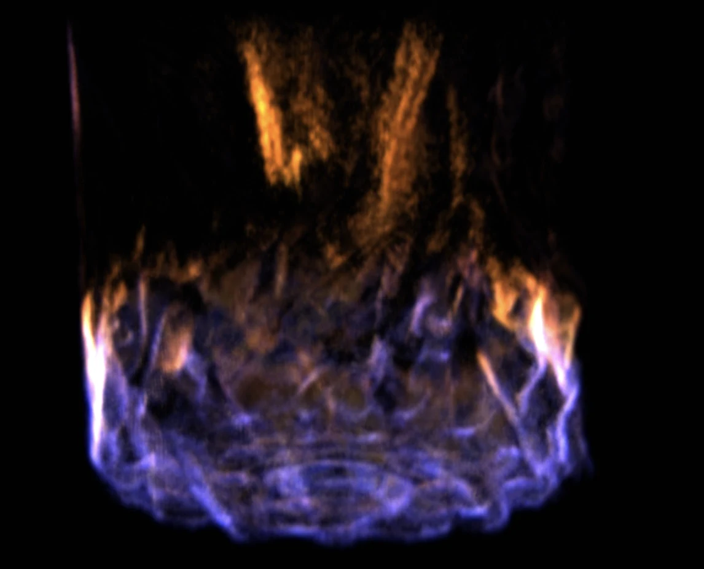

01
Neural fire
A live material system that reads as fire before it reads as a simulation.
Browser-native combustion and learned rendering developed on Apple Silicon. Compact structural fields around the combustion front guide where the volumetric renderer spends work, while a learned splat path carries coherent motion across radically different simulator states.
- Material
- Fire + smoke
- Runtime
- WebGPU
- State
- Live + steerable